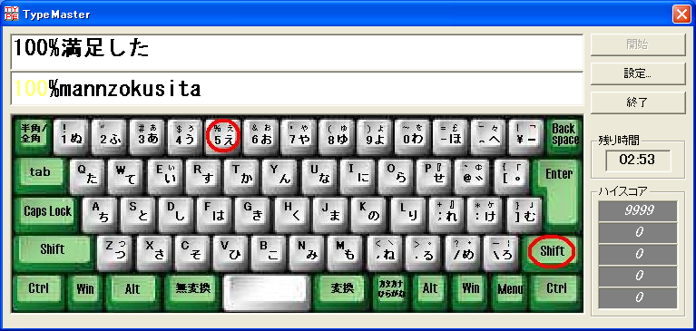
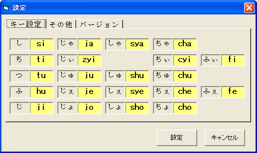
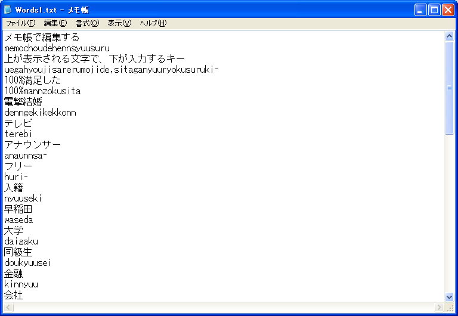
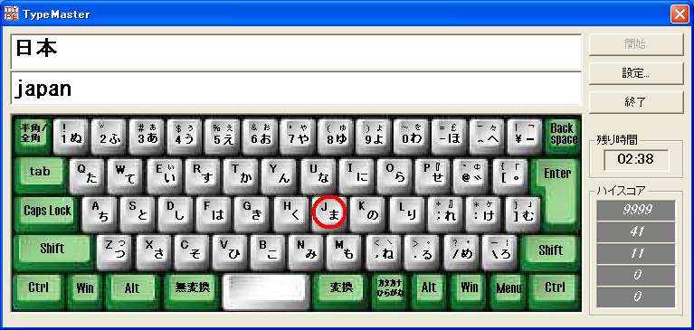

| タイプマスターとは？
|
| 初心者向け、タイピング練習ソフトです。 手元を見ないでキーボードを打てたらかっこいいなーと思いませんか？（これをタッチタイピングという） そんな方は、まずこのタイプマスターで練習されたらいいと思います。 タッチタイピングをマスターするには、できるだけ手元を見ないで入力することだと思います。 初めは、 ・指がつる ・手元を見たほうが早い ・なんでこんなキー配置なんや？５０音順にしてくれ．．． いろんな、壁にぶち当たります。大丈夫！壁は乗り越えれます。毎日練習してれば。 そのうち、体が覚えるというか、勝手に指が動くようになってくるはずです。 皆様が、タッチタイピングをマスターされることを願っております。 |
| 次に押すキーの色が変わります
|
| 手元を見ないでキーの位置が分かるので、赤くなったキーを正しい指で押してください。  |
| キーカスタマイズが可能です
|
| 自分の好みに応じたキーにカスタマイズできます。  |
| 自分で問題を作れます
|
| 問題はテキストファイルなので、メモ帳等で編集できます。  |
| ソースコード付き
|
| VB6のソースコードも付いてますので、プログラミングに挑戦しようと思っている方は参考にしてください。 まだまだ、改善の余地がありますので、自由に改良してくださって結構です。 |
| ちっと変わった使い方
|
| 問題を細工することにより、英語のスペルを覚えることにも使えると思います。 例えば、上側に日本語で「日本」、下側にそれに対応した英語「japan」と出題されるような問題を作成することにより可能です。  |
| 動作環境
|
| OS : Windows NT / 2000 / XP 別途、VB6ランタイムが必要です。 フリーソフト |
| 変更履歴
|
| 【Ver1.0】 2002/11/27 ・新規作成 【Ver2.0】 2003/02/21 ・キーボードの画面デザインを変更 ・"?"キーのときシフトが赤くならないバグを修正 ・"_"キーのときインデックスが有効範囲にありませんのエラーが発生するバグを修正 ・ハイスコアを記憶しておくように修正 ・文字の色を変更できるように修正 ・アイコンを設定 ・shuを含む問題がある時にfuに設定した場合、sfuと変換されてしまうバグを修正 例) 終了(shuuryou → sfuuryou) |
| ダウンロード
|
| こちらからお願いします。 |
| ライセンス
|
| BSDライセンス |
| ＰＳ
|
| タイプマスターが以下の雑誌で紹介されました。 ・Windows Power JUMBO 2003年3月号 (株式会社エンターブレイン) ・ウインドウズ ROM! 2003年4月号 (株式会社ＭＣプレス) |
{kind=link}
{kind=link}
{kind=link}